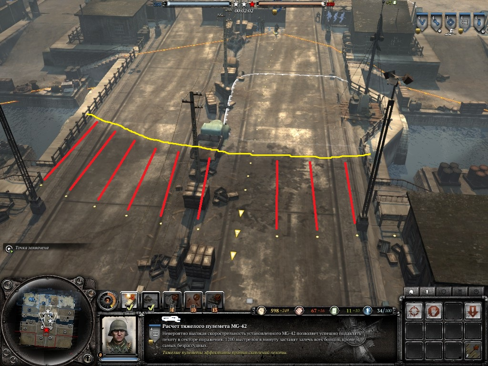

Руководство по обороне для игроков среднего уровня.
В этом разделе я хочу рассказать об составляющих обороны.Так как из малого строится большое.
И первый юнит на котором строится любая организованная оборона-это пулемёт.Да,без него никак.Особенностью этого юнита является то,что он через несколько секунд после начала стрельбы а иногда и сразу(зависет он типа)начинает подавлять пехоту противника.Подавленная пехота начинает перемешаться ползком и самое важное,ей начинает наносится повышенный урон.Через несколько секунд ,как правило, отряд противника подавляется полностью и в этом состояние юниты нечего не могут сделать кроме как отступить.Хочется акцентировать внимание на том,что многие игроги,даже проведя сто часов в игре не замечают.Это радиус обзора и поражения.Думаете они одинаковы?А вот и нет =D
Для наглядности я обвёл радус обзора и поражения разными цветами.На этой картины хорошо видно различие.В зоне помеченной красными линиями,как вы видите может расположится целый отряд.Хочется отменить,что это не косается тех,кто сидит в здание. Вы уже догадались чем это грозит вам?Надеюсь да.Как же исправить такую вот проблему.Всё просто.Ставим отряд обычной пехоты впереди пулемёта.